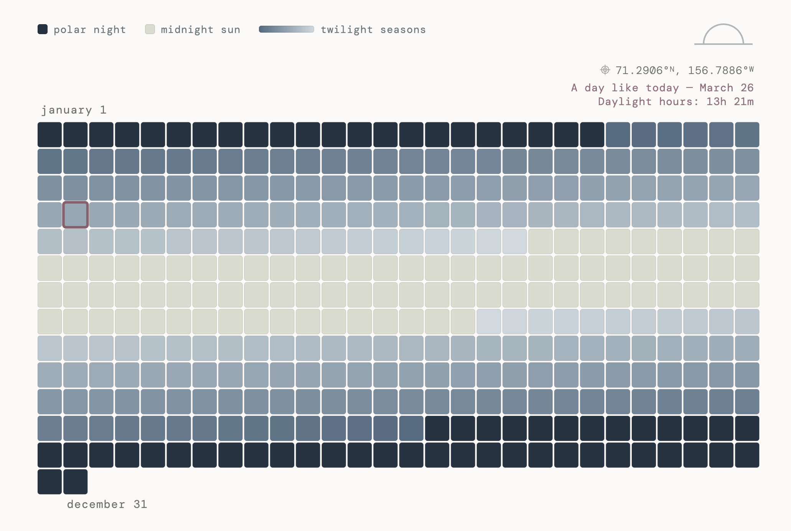

A year in Utqiaġvik, Alaska — where time fractures between polar night and midnight sun. Each tile marks a day, colored by its share of daylight hours.
See live site ↗Utqiaġvik, Alaska, is one of the few places on Earth where the sun disappears entirely for months, and then stays above the horizon for months more. Polar night runs from mid-November to mid-January; midnight sun from mid-May to early August.
This piece uses Utqiaġvik as a way into a different kind of calendar — one structured not by weeks or months, but by light.
Daylight data was pulled from the Open-Meteo API for the full year 2024 at Utqiaġvik's coordinates. Polar night was defined as 0 daylight hours; midnight sun as 24 hours; twilight seasons as everything between.
Each day was assigned a color based on its daylight hours, running from near-black navy through graduated slate blues to pale sage-green.
Seen as a whole, the year reveals something description alone cannot: the symmetry of the extremes, the long gradual descent into darkness in autumn, the sudden snap of polar night, the slow bloom back toward light.
A minimal marker highlights the current day in the calendar, a small anchor making the abstract briefly concrete.
